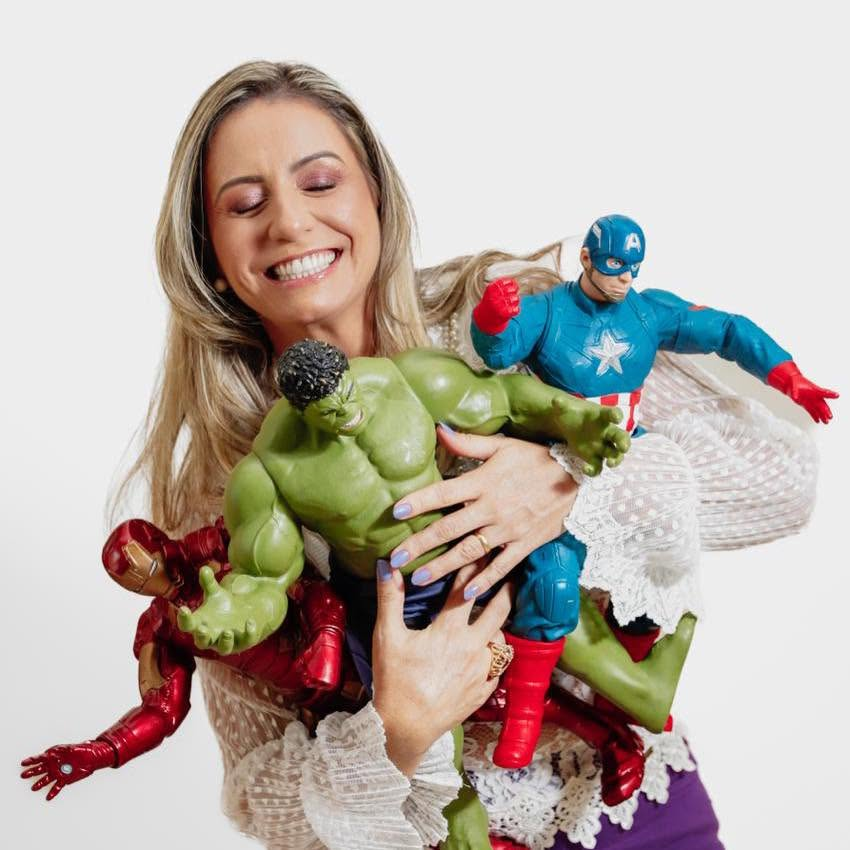

Atendimento acolhedor
Um ambiente pensado para receber cada criança com atenção, respeito ao seu tempo e muito carinho.
Atendimento odontopediátrico com carinho, segurança e atenção a cada fase da infância.

Cada detalhe pensado para que a visita ao dentista seja tranquila, para o pequeno e para você.
Um ambiente pensado para receber cada criança com atenção, respeito ao seu tempo e muito carinho.
Cuidados que acompanham cada fase da infância, ajudando a construir hábitos saudáveis desde os primeiros dentinhos.
Explicações claras e acolhedoras para toda a família participar do cuidado com o sorriso do pequeno.
Cada consulta é conduzida com paciência, para que a criança se sinta segura e a visita seja leve.
Cuidar de crianças é, antes de tudo, cuidar de vínculos. Cada atendimento é construído com paciência, escuta e muito carinho, para que o consultório se torne um lugar de confiança, e não de medo.
Acredito que orientar as famílias é parte essencial do cuidado. Por isso, cada visita é também um momento de aprendizado e tranquilidade para pais e responsáveis.
Conversar com a Dra. FabianaObserve os sinais: prevenir é sempre o melhor caminho.
Criar o hábito da escovação logo no início ajuda a proteger o sorriso e a transformar a higiene em rotina natural.
Moderar doces no dia a dia contribui para um sorriso mais saudável e feliz por muito mais tempo.
Acompanhamento contínuo ajuda a identificar cuidados necessários antes que se tornem preocupações maiores.
Agende uma consulta e dê o primeiro passo para uma infância com mais saúde e sorrisos tranquilos.
Agendar consulta agora